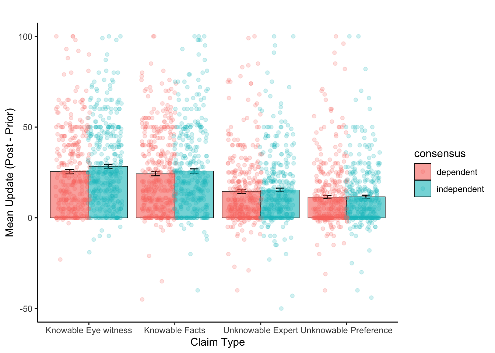
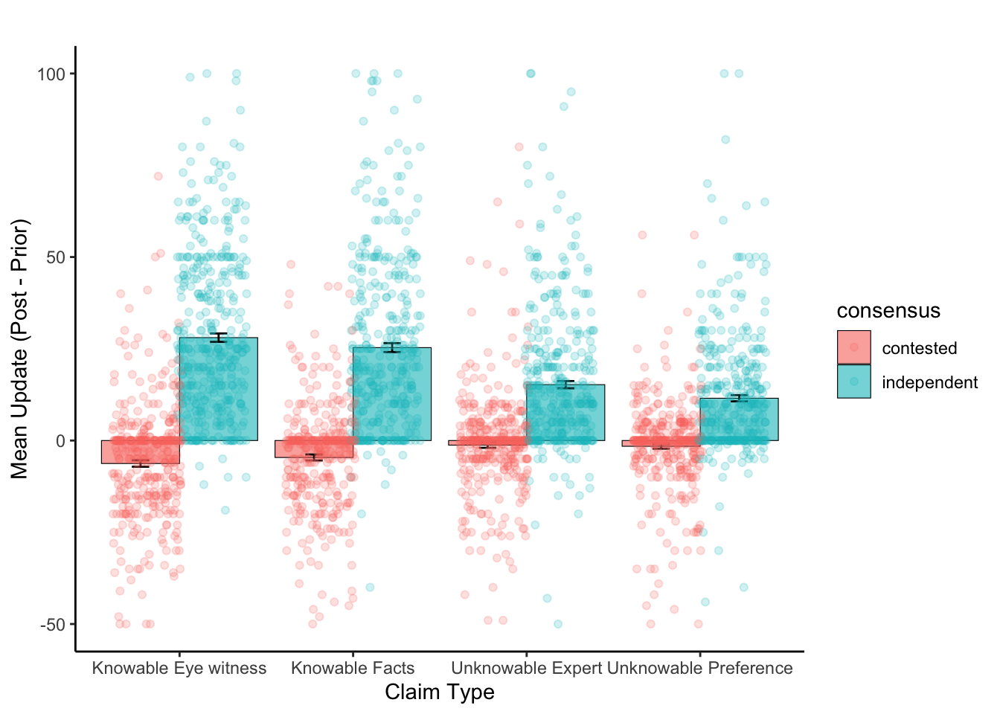

Code
load(here("data/derived/model_comparison.Rdata"))
load(here("data/clean/all_data_clean.Rdata"))
data <- all_data[[1]] %>%
mutate(update = post_adjusted - pre_adjusted)
d_independence <- data %>%
filter(consensus != "contested")load(here("data/derived/model_comparison.Rdata"))
load(here("data/clean/all_data_clean.Rdata"))
data <- all_data[[1]] %>%
mutate(update = post_adjusted - pre_adjusted)
d_independence <- data %>%
filter(consensus != "contested")mean_updates <- d_independence %>%
group_by(claim_type, consensus) %>%
summarise(mean_update = mean(update),
se_update = sd(update) / sqrt(n())
)`summarise()` has grouped output by 'claim_type'. You can override using the
`.groups` argument.mean_updates %>%
ggplot(aes(x = claim_type, y = mean_update, fill = consensus)) +
geom_col(position = "dodge", colour = "black", size = 0.2, alpha = .6) +
geom_errorbar(aes(ymin = mean_update - se_update, ymax = mean_update + se_update),
position = position_dodge(0.9), width = 0.2) +
geom_jitter(data = d_independence, aes(x = claim_type, y = update, colour = consensus),
position = position_jitterdodge(), alpha = 0.2) +
ylim(-50, 100) +
labs(title = "",
x = "Claim Type",
y = "Mean Update (Post - Prior)") +
theme_classic()Warning: Using `size` aesthetic for lines was deprecated in ggplot2 3.4.0.
ℹ Please use `linewidth` instead.Warning: Removed 3 rows containing missing values (`geom_point()`).
deltas_claim_type <- d_independence %>%
filter(consensus != "contested") %>%
pivot_wider(names_from = consensus, values_from = update) %>%
group_by(claim_type) %>%
summarise(delta = mean(independent, na.rm = TRUE)-mean(dependent, na.rm = TRUE))
deltas_claim_type %>%
ggplot(aes(x = claim_type, y = delta))+
geom_col(fill = "seagreen")+
theme_classic()+
labs(x = "Claim Type", y = "Delta (Independent - Dependent)")
# load output
load(here("data/derived/group_output_combined.Rdata"))model_LOOICs %>%
filter(excluded_condition == "contested") %>%
mutate(model_rank = rank(all_looic)) model excluded_condition all_looic model_rank
1 group-prior contested 25981.34 4
2 group-prior-consensus contested 25976.19 3
3 group-prior-consensus-claim contested 25538.65 1
4 group-prior-consensusXclaim contested 25540.92 2model_LOOICs %>%
filter(excluded_condition == "dependent") %>%
mutate(model_rank = rank(all_looic)) model excluded_condition all_looic model_rank
1 group-prior dependent 26689.00 4
2 group-prior-consensus dependent 25665.46 3
3 group-prior-consensus-claim dependent 25598.01 2
4 group-prior-consensusXclaim dependent 25372.54 1load(here("analyses/02_output/group-prior-consensusXclaim-rm-contested.Rdata"))
summary(output) Family: gaussian
Links: mu = identity; sigma = identity
Formula: post_adjusted ~ (1 | participant) + pre_adjusted + consensus * claim_type
Data: filtered_data (Number of observations: 3000)
Draws: 4 chains, each with iter = 2000; warmup = 1000; thin = 1;
total post-warmup draws = 4000
Group-Level Effects:
~participant (Number of levels: 75)
Estimate Est.Error l-95% CI u-95% CI Rhat Bulk_ESS Tail_ESS
sd(Intercept) 8.72 0.80 7.33 10.51 1.00 874 1529
Population-Level Effects:
Estimate Est.Error l-95% CI
Intercept 43.50 1.48 40.62
pre_adjusted 0.66 0.01 0.64
consensusindependent 1.65 1.24 -0.78
claim_typeKnowableFacts -3.36 1.23 -5.75
claim_typeUnknowableExpert -13.07 1.26 -15.50
claim_typeUnknowablePreference -15.11 1.25 -17.53
consensusindependent:claim_typeKnowableFacts 0.95 1.77 -2.37
consensusindependent:claim_typeUnknowableExpert 0.90 1.75 -2.45
consensusindependent:claim_typeUnknowablePreference -2.06 1.74 -5.51
u-95% CI Rhat Bulk_ESS
Intercept 46.40 1.00 828
pre_adjusted 0.69 1.00 7945
consensusindependent 4.03 1.00 1674
claim_typeKnowableFacts -0.95 1.00 2184
claim_typeUnknowableExpert -10.66 1.00 2364
claim_typeUnknowablePreference -12.66 1.00 2472
consensusindependent:claim_typeKnowableFacts 4.37 1.00 2117
consensusindependent:claim_typeUnknowableExpert 4.28 1.00 1998
consensusindependent:claim_typeUnknowablePreference 1.39 1.00 2168
Tail_ESS
Intercept 1834
pre_adjusted 2794
consensusindependent 2740
claim_typeKnowableFacts 3112
claim_typeUnknowableExpert 3109
claim_typeUnknowablePreference 3159
consensusindependent:claim_typeKnowableFacts 3034
consensusindependent:claim_typeUnknowableExpert 2644
consensusindependent:claim_typeUnknowablePreference 2936
Family Specific Parameters:
Estimate Est.Error l-95% CI u-95% CI Rhat Bulk_ESS Tail_ESS
sigma 16.86 0.22 16.43 17.30 1.00 7848 2701
Draws were sampled using sampling(NUTS). For each parameter, Bulk_ESS
and Tail_ESS are effective sample size measures, and Rhat is the potential
scale reduction factor on split chains (at convergence, Rhat = 1).load(here("analyses/02_output/group-prior-consensusXclaim-rm-dependent.Rdata"))
summary(output) Family: gaussian
Links: mu = identity; sigma = identity
Formula: post_adjusted ~ (1 | participant) + pre_adjusted + consensus * claim_type
Data: filtered_data (Number of observations: 3000)
Draws: 4 chains, each with iter = 2000; warmup = 1000; thin = 1;
total post-warmup draws = 4000
Group-Level Effects:
~participant (Number of levels: 75)
Estimate Est.Error l-95% CI u-95% CI Rhat Bulk_ESS Tail_ESS
sd(Intercept) 3.57 0.46 2.73 4.53 1.00 1955 2669
Population-Level Effects:
Estimate Est.Error l-95% CI
Intercept 9.35 1.17 7.06
pre_adjusted 0.72 0.01 0.69
consensusindependent 33.47 1.20 31.23
claim_typeKnowableFacts 2.12 1.21 -0.23
claim_typeUnknowableExpert 6.64 1.17 4.35
claim_typeUnknowablePreference 4.34 1.25 1.82
consensusindependent:claim_typeKnowableFacts -4.84 1.72 -8.18
consensusindependent:claim_typeUnknowableExpert -19.21 1.69 -22.57
consensusindependent:claim_typeUnknowablePreference -21.94 1.73 -25.37
u-95% CI Rhat Bulk_ESS
Intercept 11.63 1.00 3277
pre_adjusted 0.74 1.00 10229
consensusindependent 35.82 1.00 2230
claim_typeKnowableFacts 4.54 1.00 2995
claim_typeUnknowableExpert 8.89 1.00 2933
claim_typeUnknowablePreference 6.74 1.00 2910
consensusindependent:claim_typeKnowableFacts -1.48 1.00 2655
consensusindependent:claim_typeUnknowableExpert -15.89 1.00 2678
consensusindependent:claim_typeUnknowablePreference -18.47 1.00 2656
Tail_ESS
Intercept 3118
pre_adjusted 2905
consensusindependent 2630
claim_typeKnowableFacts 3186
claim_typeUnknowableExpert 3133
claim_typeUnknowablePreference 3191
consensusindependent:claim_typeKnowableFacts 2726
consensusindependent:claim_typeUnknowableExpert 2950
consensusindependent:claim_typeUnknowablePreference 2851
Family Specific Parameters:
Estimate Est.Error l-95% CI u-95% CI Rhat Bulk_ESS Tail_ESS
sigma 16.44 0.22 16.03 16.87 1.00 10096 2866
Draws were sampled using sampling(NUTS). For each parameter, Bulk_ESS
and Tail_ESS are effective sample size measures, and Rhat is the potential
scale reduction factor on split chains (at convergence, Rhat = 1).